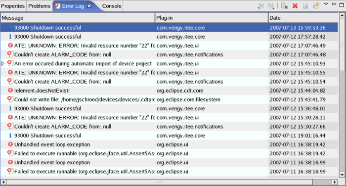

Error Log View
The Error Log view is part of the Setup perspective and displays all errors coming from the test system and from Eclipse plug-ins. Errors that are associated with a particular test system resource (test data component) are displayed in the System Console.

The following message types are displayed: ERROR, WARNING and INFO. If an ERROR is issued, the continued usage of the system might fail. The exception that caused the error is displayed, too.
Messages that are caused by the test system have the prefix ATE.
Messages that are caused by Eclipse plug-ins have no prefix.
Every message line contains also a time stamp and the name of the plug-in, which caused the message.
You can export the Error Log View content to a file, import the content from a file into the Error Log View and clear the content by using the toolbar.
The toolbar of the Error Log View contains the following icons:
Icon |
Function |
|---|---|
Exports the Error Log View content to a file. |
|
Imports the content of a log file into the Error Log View. |
|

|
Clears the content of the Error Log View. |
Deletes the logged events of the Error Log View and the log file. |
|
Opens the log file. |
|
Restores the content of the Error Log View from the log file. |
Functional changes
- Introduced before SmarTest 6.3.2